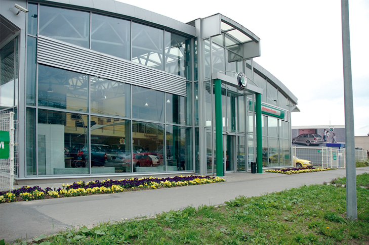

История ГК Wagner
Группа компаний Wagner работает на автомобильном рынке Санкт-Петербурга с 2003 года и объединяет дилерские центры Mercedes-Benz, Audi, Volkswagen, Skoda
Первым предприятием, вошедшим в группу WAGNER, стал «Автоцентр «Пулково», открывшийся в июне 2004 года в Санкт-Петербурге, в деловой зоне Пулково-3. Автоцентр «Пулково» стал первым в России концептуальным дилерским центром Volkswagen, предоставляющим услуги по продаже и сервисному обслуживанию автомобилей в полном соответствии с корпоративными стандартами марки.
В 2006 году «Автоцентр «Пулково» получил право носить название Фольксваген Центр Пулково. Право использования в наименовании дилерского предприятия марки Volkswagen словосочетания «Фольксваген Центр» предоставляется компаниям, полностью соответствующим корпоративным стандартам марки. Это относится как к архитектуре здания дилерского центра, оборудованию шоу-рума и сервисного центра, так и к внешнему виду сотрудников предприятия, их квалификации, высокому уровню организации бизнес-процессов, уровню и набору услуг и сервиса, предоставляемых клиентам.
В ноябре 2006 года на Стартовой улице, 5 был открыт еще один дилерский центр «Пулково-Авто» — официальный дилер марки SKODA. Он также стал первым дилерским предприятием марки, построенным и оснащенным в полном соответствии с рекомендациями и стандартами марки. Дилерский центр предлагает автомобили всего модельного ряда, оригинальные детали и аксессуары SKODA, дополнительное оборудование, а также сервисное обслуживание автомобилей.

Рост автомобильного рынка, строительство завода концерна Volkswagen в Калуге, сплоченная команда
профессионалов, желание не останавливаться на достигнутом позволили акционерам компании
планировать дальнейшие инвестиции в автомобильное направление бизнеса. Было принято решение о
строительстве новых дилерских центров Volkswagen и SKODA в Приморском районе Санкт-Петербурга и
подписаны дилерские контракты с представительствами этих марок в России.
В апреле 2007 года на временных площадках были открыты дилерские центры Volkswagen — Автоцентр
«Северо-Запад» и SKODA — «Неон-Авто»..
И уже в июне 2010 года официальный дилер SKODA «Неон-Авто» разместился в собственном дилерском
центре, выстроенном по архитектурной концепции SKODA на ул. Оптиков, дом 3А.
В дилерском центре на площади более чем 1800 кв м располагаются просторный демонстрационный зал,
автосервис, кафе и комфортная зона ожидания для клиентов «Неон-Авто». Автосалон построен с
учетом всех международных стандартов марки SKODA: на территории ремонтной зоны к услугам
автовладельцев 9 подъемников, автосервис оснащен двумя мойками (автоматической и ручной).
«Неон-Авто» является единственным официальным дилером с авторизированным сервисным центром SKODA
в Приморском районе Санкт-Петербурга.
9 сентября 2010 года на ул. Оптиков, 3А состоялось открытие собственного дилерского центра
одного из крупнейших на северо-западе России официальных дилеров Volkswagen — «Автоцентра
«Северо-Запад». Автоцентр построен по новой белой архитектурной концепции Volkswagen. И уже
через год — в сентябре 2011 года дилерское предприятие удостоено чести носить название
Фольксваген Центр Лахта.
Фольксваген Центр Лахта полностью отвечает высоким стандартам немецкого производителя и
позволяет клиентам выбрать свой автомобиль в условиях повышенного комфорта.
В просторном шоу-руме площадью 750 м² представлен весь модельный ряд автомобилей Volkswagen,
поставляемых на российский рынок.
Сервисный центр площадью 2450 м² оборудован в соответствии со стандартами и рекомендациями марки
Volkswagen и оснащен самым современным программным обеспечением и широким комплектом
диагностического оборудования. Фольксваген Центр Лахта предлагает полный цикл обслуживания,
включая малярно-кузовные работы, что обеспечивает клиентам весь набор услуг по ремонту и
техническому обслуживанию автомобилей марки Volkswagen.
Фольксваген Центр Лахта — одно из немногих дилерских предприятий Volkswagen в Санкт-Петербурге,
получивших статус Phaeton Center, что дает право продавать и обслуживать автомобили Volkswagen
Phaeton.
В 2011 году Фольксваген Центр Пулково был признан лучшим дилерским предприятием Volkswagen в
России, а Фольксваген Центр Лахта стал вторым в Санкт-Петербурге дилерским предприятием
Volkswagen, удостоенным права называться Фольксваген Центром.
В 2013 году Фольксваген Центр Лахта вошел в тройку лучших дилеров Volkswagen в России и стал
дилером № 1 в Санкт-Петербурге.